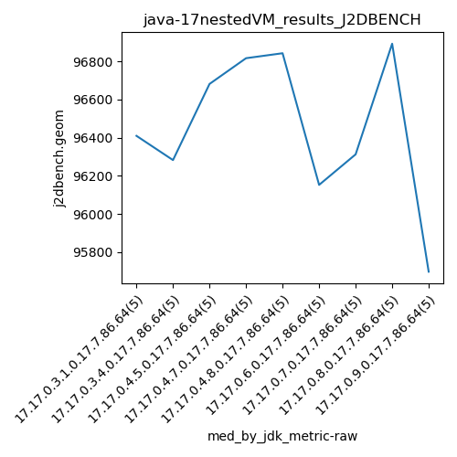

java-17 J2DBENCH
Context at bottom
/home/jvanek/git/benchmarks-in-nested-virtualisation-toolchain/final_results/nestedVM_results/nestedVM_results_J2DBENCH
java-17
J2DBENCH
nestedVM_results_J2DBENCH
final score
Expected number of java-17 JDKs: 9
1st avgmed_alljdks_metric:
/home/jvanek/git/benchmarks-in-nested-virtualisation-toolchain/final_results/result_processing.py /home/jvanek/git/benchmarks-in-nested-virtualisation-toolchain/final_results/nestedVM_results/nestedVM_results_J2DBENCH j2dbench.geom False
values: [97213, 96249, 96410, 96751, 95673, 96283, 96337, 96500, 95305, 95859, 96858, 96033, 97559, 96384, 96682, 97286, 96227, 97064, 96817, 96180, 96728, 96843, 97244, 96753, 96911, 96625, 96640, 96153, 95598, 95855, 96519, 95316, 96313, 96265, 96557, 95126, 96893, 96996, 96966, 96297, 95058, 95721, 94244, 95698, 96763]

Expected number of iterations: 5
final number of values: 45 out of 45
Pass rate: 100.0%
values: (94244, 97559, 96350.04444444444, 96410)

** accuracy from all jdks and runs
more is better
MIN: 94244
MAX: 97559
AVG: 96350.04444444444
MED: 96410
Relative differences 1:
MIN-MAX: 3.0 %
MIN-AVG: 2.0 %
MIN-MED: 2.0 %
MAX-MIN: -4.0 %
MAX-AVG: -1.0 %
MAX-MED: -1.0 %
AVG-MED: 0.0 %
stored to java-17.properties. sort | uniq that!
2nd avgmed_by_jdk_metric:
values: [96459.2, 96056.8, 96703.2, 96714.8, 96895.8, 96174.2, 96194.0, 96455.6, 95496.8]

values: [96410, 96283, 96682, 96817, 96843, 96153, 96313, 96893, 95698]

values: (95496.8, 96895.8, 96350.04444444444, 96455.6)
values: (95698, 96893, 96454.66666666667, 96410)

** accuracy from all jdks where runs were avged
more is better
MIN: 95496.8
MAX: 96895.8
AVG: 96350.04444444444
MED: 96455.6
Relative differences 1:
MIN-MAX: 1.0 %
MIN-AVG: 1.0 %
MIN-MED: 1.0 %
MAX-MIN: -1.0 %
MAX-AVG: -1.0 %
MAX-MED: -0.0 %
AVG-MED: 0.0 %
stored to java-17.properties. sort | uniq that!
** accuracy from all jdks where runs were medianed
more is better
MIN: 95698
MAX: 96893
AVG: 96454.66666666667
MED: 96410
Relative differences 1:
MIN-MAX: 1.0 %
MIN-AVG: 1.0 %
MIN-MED: 1.0 %
MAX-MIN: -1.0 %
MAX-AVG: -0.0 %
MAX-MED: -1.0 %
AVG-MED: -0.0 %
stored to java-17.properties. sort | uniq that!
/home/jvanek/git/benchmarks-in-nested-virtualisation-toolchain/final_results/nestedVM_results/nestedVM_results_RADARGUNs3
java-17
J2DBENCH
/home/jvanek/git/benchmarks-in-nested-virtualisation-toolchain/final_results/nestedVM_results/nestedVM_results_DACAPO
java-17
J2DBENCH
/home/jvanek/git/benchmarks-in-nested-virtualisation-toolchain/final_results/nestedVM_results/nestedVM_results_JMH
java-17
J2DBENCH
/home/jvanek/git/benchmarks-in-nested-virtualisation-toolchain/final_results/nestedVM_results/nestedVM_results_SPECJBB
java-17
J2DBENCH
/home/jvanek/git/benchmarks-in-nested-virtualisation-toolchain/final_results/nestedVM_results/nestedVM_results_RADARGUNs1
java-17
J2DBENCH
pass rates:
nestedVM_results_J2DBENCH=100.0%
Context:
- nestedVM_results
- J2DBENCH